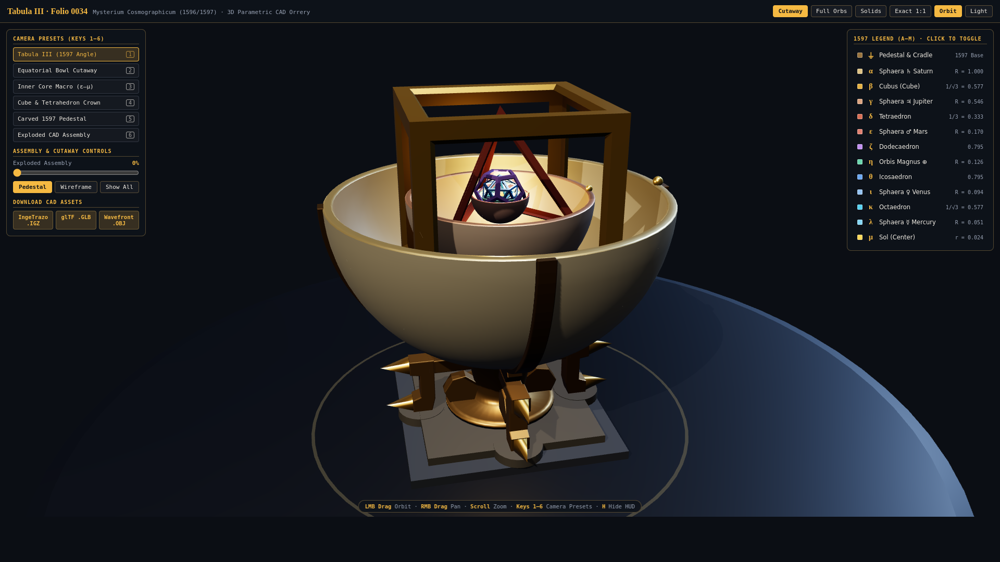
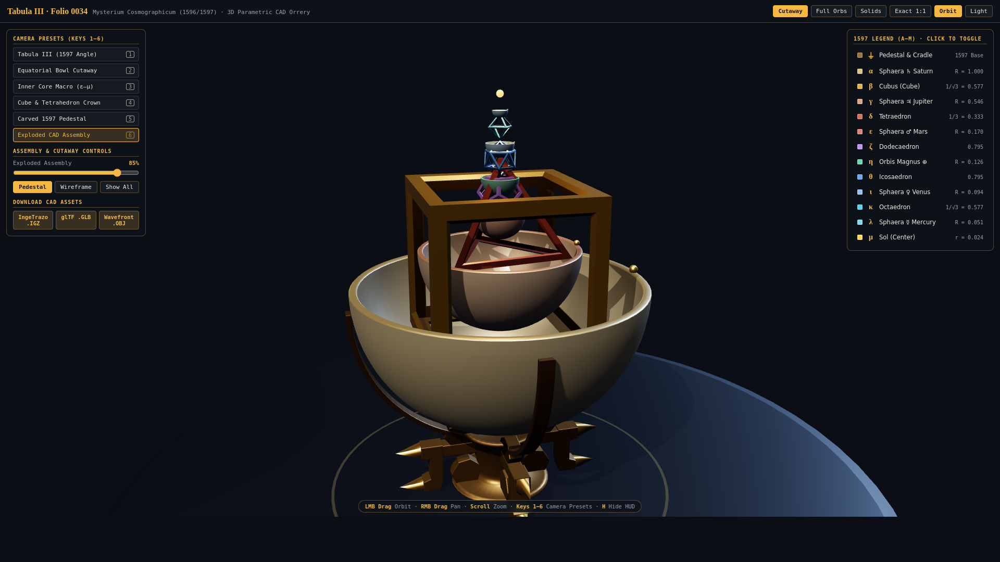
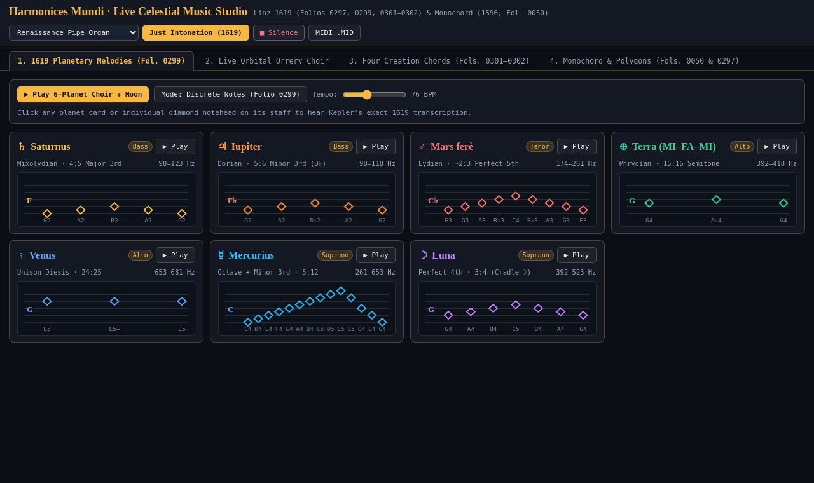
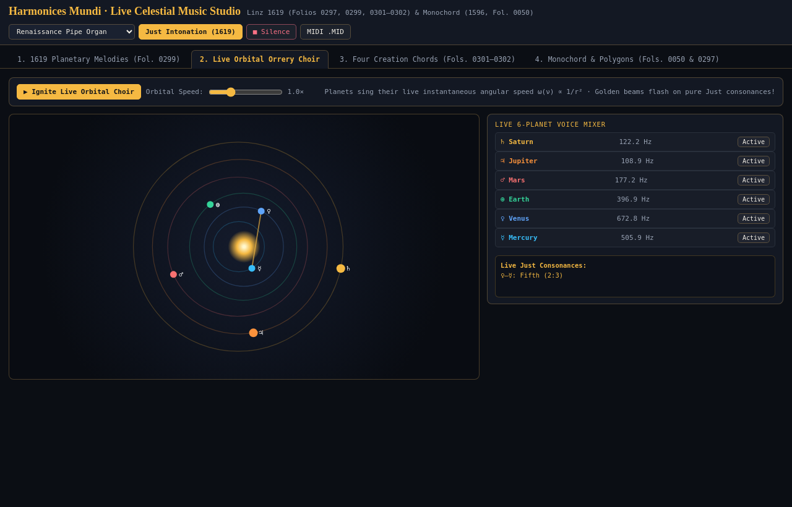
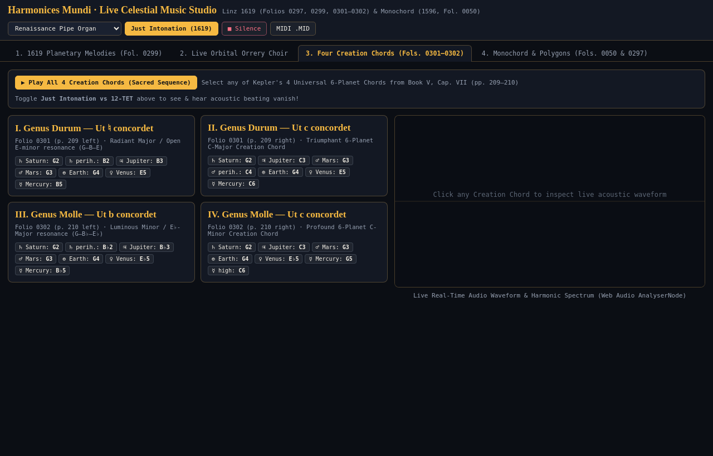
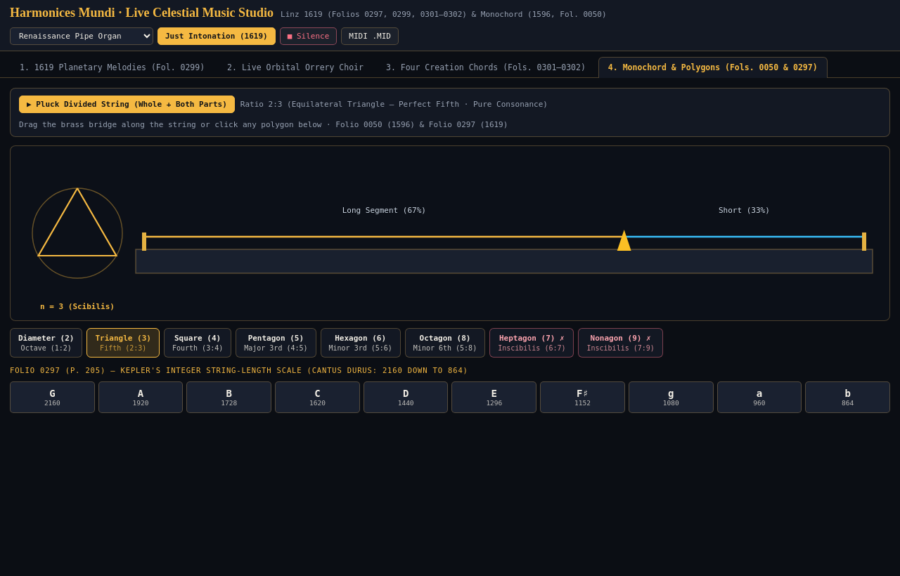
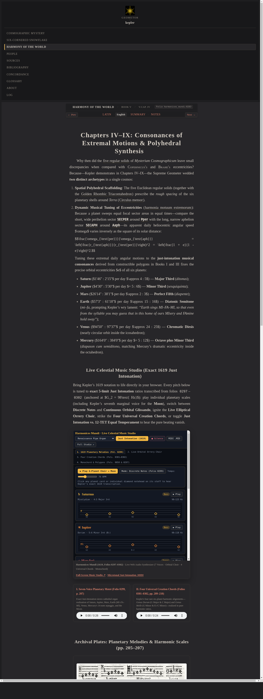

Visual & Symbolic Audits: Bringing Kepler’s 3D Polyhedra & Celestial Music to Life¶
November 19, 2026 — Across three coordinated milestones (2b5a0a4, bfcee1b, and fadc2d9), geometor-kepler evolved from a static bilingual edition into a living 3D CAD and Just-Intonation acoustic instrument—audited at every layer by direct multimodal scan inspection, headless Chromium WebGL/Canvas captures, and exact symbolic algebra.
Rather than treating visual QA as an invisible scratch step, this log preserves the actual audit captures, edge-case catches, and four-gate verification matrix that validated both interactive studios before publication.
1. Multimodal Primary-Source Scan Audits (Vision Over OCR)¶
Every geometric figure, polyhedral frame, and musical notehead was verified by directly inspecting Kepler’s 300-DPI editio princeps scans rather than relying on embedded OCR layers:
Folio 0034 (Tabula III, Tübingen 1597) — Confirmed Leibfried’s cutaway hemispherical planetary bowls ($\alpha$–$\lambda$), mitered open-frame Platonic struts ($\beta$–$\kappa$), eccentric Solar core ($\mu$), and turned Renaissance pedestal, grounding the 13-group parametric CAD model in
tabula_iii_3d/.Folio 0299 (Harmonices Mundi Book V, Linz 1619, p. 207) — Direct visual reading caught two details frequently omitted in secondary transcriptions:
Kepler’s seventh marginal voice (“Hic locum habet etiam ☽”) assigning the Moon a Perfect-4th cradle monody ($G_4$–$A_4$–$B_4$–$C_5$–$B_4$–$A_4$–$G_4$, exact ratio $3:4$); and
All 14 diamond mensural lozenges of Mercury’s melody—ten stepwise ascending pitches ($C_4 \to E_5$) followed by a four-note descending major-triad arpeggio ($C_5 \to G_4 \to E_4 \to C_4$).
Folios 0297, 0301 & 0302 (Linz 1619, pp. 205, 209–210) — Verified Kepler’s exact integer string-length divisions (
2160down to864for Cantus Durus and Cantus Mollis) and visually crop-audited both Universal Six-Planet Creation Chord engravings (0301.g1.pngGenus Durum and0302.g1.pngGenus Molle), extending0301’s lower margin to0.905and trimming0302’s bottom to0.685so every staff border sits cleanly balanced.
2. Headless WebGL Audit: Tabula III 3D Parametric CAD Studio¶
Using headless Chromium with offline-vendored Three.js (docsrc/_static/vendor/), we rendered and inspected both the assembled 1597 engraving angle and the 85% exploded vertical CAD stack of Tabula III (Launch Full-Screen CAD Studio):




Each CAD shell obeys Kepler’s exact Caput XIII insphere/circumsphere schedule to $< 10^{-9}$ tolerance: Cube & Octahedron $1/\sqrt{3}$, Tetrahedron $1/3$, and Dodecahedron & Icosahedron $\sqrt{(5 + 2\sqrt{5})/15}$, exported simultaneously as IngeTrazo .igz, Binary glTF .glb, Wavefront .obj/.mtl, and native Blender .blend.
3. Headless Canvas & Layout Audits: Live Celestial Music Studio¶
Every one of the four instruments inside the Interactive Celestial Music Studio (Launch Full-Screen Music Studio) was rendered and inspected via headless Chromium before commit.
Real UI Catches Fixed During the Audit:
Card Baseline Alignment (Tab 1): The first render of the seven planetary staves revealed that
Luna (Cradle Monody)wrapped its▶ Playbutton and frequency span onto two lines, making the seventh card 18 px taller than Saturn through Mercury. Addingwhite-space: nowrapon.btnand tightening the title toLunarestored a razor-sharp horizontal grid across all 7 voices.Narrow Book-Column Embed Mode: Capturing the compiled Sphinx chapter page Book V, Chapters IV–IX showed header chrome crowding inside the 680 px reading column when mounted via
?embed=1. Introducingbody.is-embedcompact spacing immediately surfaced Saturn, Jupiter, and Mars staves directly on first paint without scroll clutter.










Direct synthesized recordings and microtonal scores produced by geometor.kepler.music:
4. Four-Gate Symbolic & Archival Verification Matrix¶
Every commit in this campaign cleared four independent automated verification gates inside the offline Python 3.13 sandbox:
Verification Gate |
Result |
Key Audited Invariants |
|---|---|---|
|
14 / 14 passed |
Zero |
Archival Plates & SVGs |
34 PNG + 14 SVG |
34 cropped 300-DPI archival plates and 14 five-layer |
|
616 scans · 0 unresolved |
61 / 61 |
|
0 lint · 0 warnings |
Clean lint across |